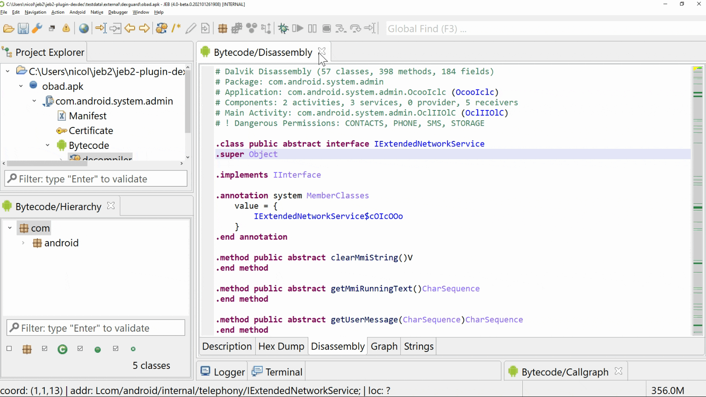

This Android analysis setting allows you to specify a list of methods which are guaranteed to have no side-effect (e.g. no field update, directly or indirectly) outside of providing a return value. This list is used by some code optimizers to further enhance decompilations.
